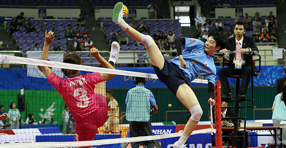
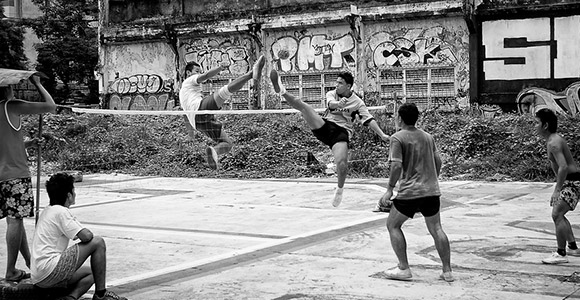
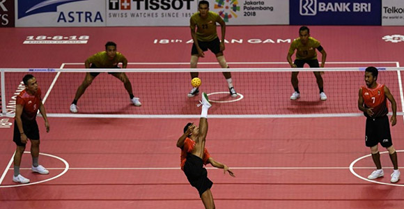

| Начало • Futsal • Speedcubing • Parkour• Teqball • Highdiving • Paintball • Sepak Takraw • Roller Derby • Kiteboarding |
| Sepak Takraw | |
|
 |
|  | История В съвременния си вариант играта е стандартизирана през 1960 г. когато официални лица от Малайзия, Сингапур, Тайланд и Мианмар се срещат в Куала Лумпур и се договарят за наименованието и стандартни правила. В международен план спортът се управлява от от Международната федерация по Сепактакрау (ISTAF), създадена през 1988 г. |
Правила на играта Основните правила и точкуването за sepak takraw са подобни на волейбола. На всеки отбор е позволено максимум 3 докосвания на топката, за да я прехвърли от другата страна – без да я оставя да докосне земята, разбира се. Първият отбор, който вкара 15 или 21 точки, в зависимост от правилата на играта, печели сета. Отборът, който надделее в 2 сета, печели мача. Sepak takraw е известен със своята сложност и бързина на методите, използвани за изпращане на топката. |
 |
| Видеа | |